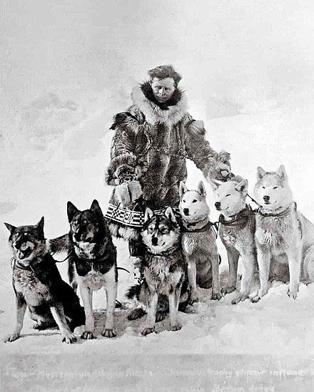

Togo (1913 – December 5, 1929) was the lead sled dog of Leonhard Seppala and his dog sled team in the 1925 serum run to Nome across central and northern Alaska. Even though he covered more distance (260 miles) than his co-sledder Balto (55 miles), he didn't get as much fame.
Togo was one of the offspring of former lead dog Suggen. He was named Cugu [tso`go], which means puppy in Northern Sami language. Initially, he did not look like he had potential as a sled dog. He only grew to about 48 pounds (22 kg) in adulthood and had a black, brown, and gray coat that made him appear perpetually dirty.
